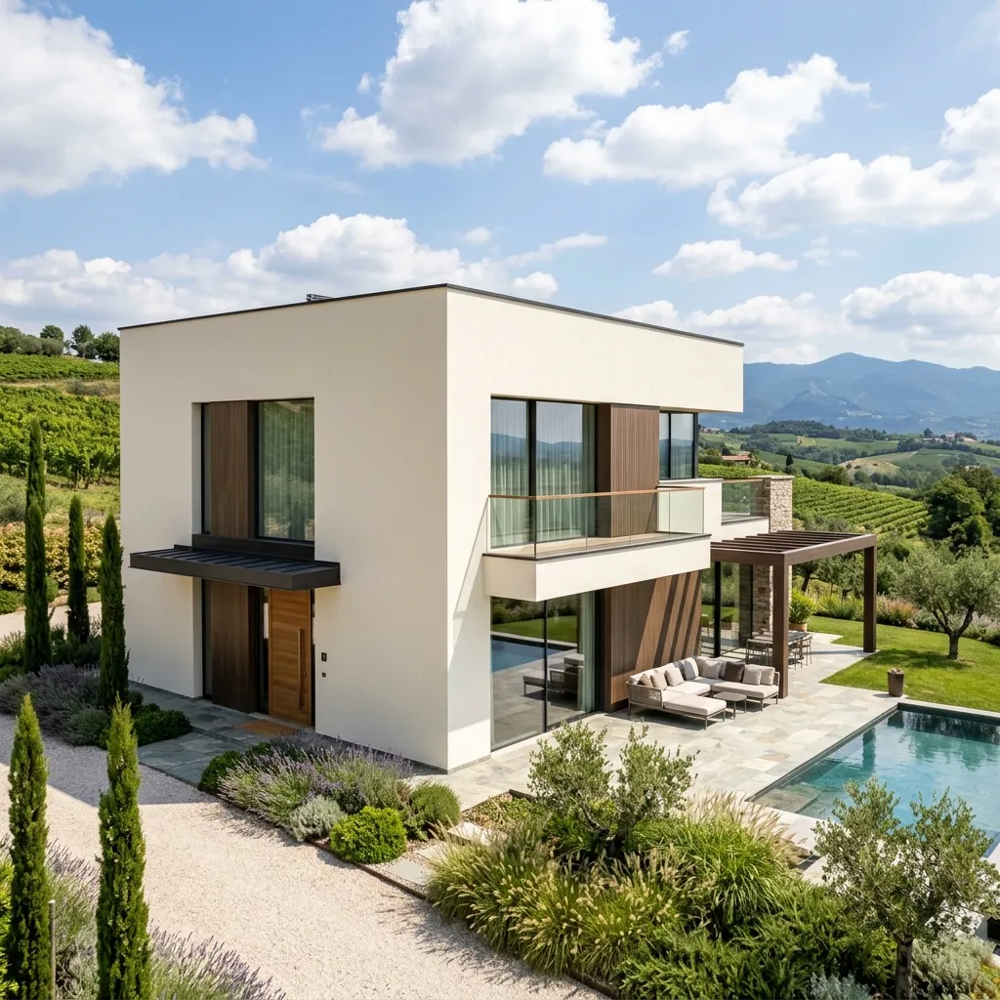

Protezione Garantita
-
Cicli Silossanici Moderni:
Protezione idrorepellente avanzata che lascia traspirare la parete respingendo l'acqua piovana.
-
Finiture elastomeriche:
Ideali per mascherare ed arrestare microcavillature e piccole crepe strutturali da assestamento.
-
Resistenza e Durata:
Formule addittivate antialga ed antimuffa per prevenire macchie nere da umidità e foschia padana.
Preventivo sul Posto Gratuito
Contattaci per organizzare un sopralluogo tecnico senza vincoli e ricevere una stima precisa ed onesta dei costi.
Ottieni Preventivo
Proteggi e Valorizza la tua Facciata
Le facciate esterne degli edifici nella pianura veneta sono costantemente sottoposte ad importanti stress termici e climatici: nebbie persistenti nei mesi freddi, calura estiva e piogge acide. Noi di **Imbianchini Padova** proponiamo tinteggiature esterne basate su prodotti di altissimo livello tecnologico per garantire resistenza, impermeabilità e stabilità cromatica nel tempo.
Le Nostre Tecnologie per Esterni:
- Pitture Silossaniche: Costituiscono la scelta premium per eccellenza. Formano un rivestimento reticolare che permette alle pareti di respirare facendo evaporare l'umidità interna, bloccando allo stesso tempo l'ingresso dell'acqua dall'esterno.
- Rivestimenti al Quarzo: Ad elevato potere riempitivo ed eccellente stabilità ai raggi ultravioletti (UV), ideali per intonaci civili rustici o moderni.
- Cicli Elastomerici Anti-Crepe: Soluzione ideale per facciate con presenza di micro-cavillature da dilatazione termica o piccoli movimenti d'assestamento murario.
- Trattamenti Antialga ed Antimuffa: Protezione preventiva essenziale per le pareti esposte a nord o in zone agricole ricche di umidità.
Metodo Operativo Rigoroso
Ogni nostro intervento all'esterno inizia con una profonda diagnosi dell'intonaco. Procediamo a lavaggi ad alta pressione per asportare vecchie vernici sfogliate, fuliggine o muffe. Risaniamo eventuali crepe con malte antiritiro e applichiamo fissativi acrilici per garantire una perfetta coesione e tenuta del ciclo di pittura finale. Gestiamo ogni aspetto logistico, compresa l'eventuale installazione di ponteggi o piattaforme aeree nel totale rispetto delle normative di sicurezza vigenti.